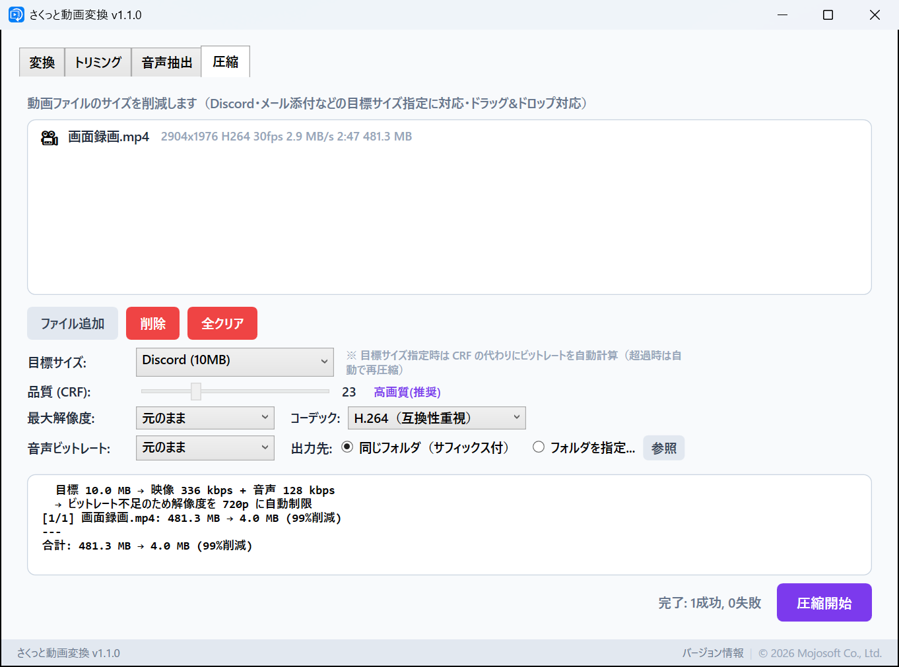
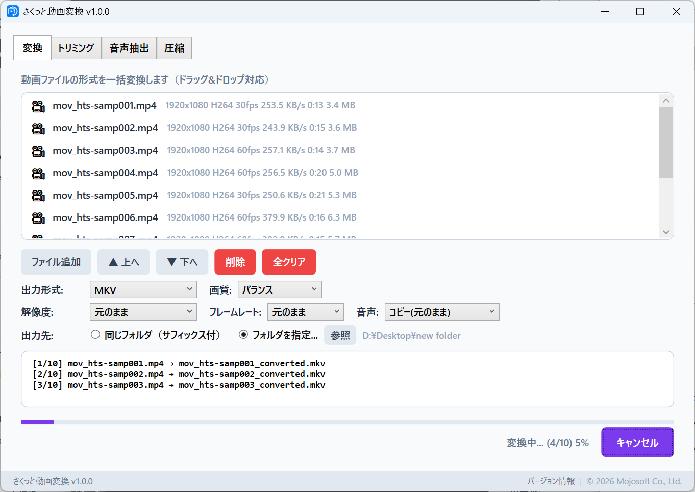
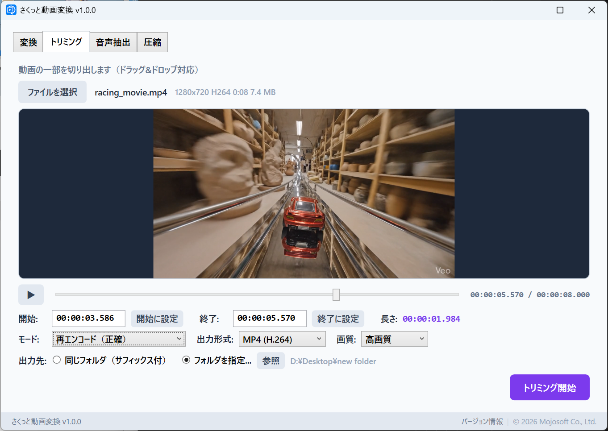
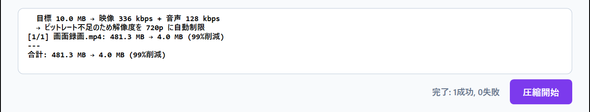

v1.1.1
- 動作の土台（.NET）を最新の長期サポート版に更新し、安全性を高めました
- 音声が出力の形式にそのまま入らない組み合わせ（WMV→MP4、MP4→WebM など）で変換が失敗していた問題を直しました（そのときは音声を自動で変換します）
Discord（10 MB）やメール添付（25 MB）に収まるように、サイズを決めて圧縮できます。形式の変換、必要な部分の切り出し、音声の取り出しも、このアプリひとつで。処理はすべて PC の中で行います。

アプリの画面で、印を付けた行の記録です。
Mojosoft のアプリの操作を録画した 2 分 47 秒の MP4（2904×1976）を、目標サイズ「Discord (10MB)」で圧縮した結果です。映像は自動で 720p になりました。動きの少ない画面録画は、目標より小さく仕上がることがあります。
Microsoft Store から購入して、すぐに使えます。アプリのアカウント登録はいりません。
まず動画を入れる
動画ファイルをドラッグ＆ドロップ。変換・音声抽出・圧縮は、何本でもまとめて処理できます。MP4・MOV・MKV・AVI など、よく使う形式をそのまま読み込めます。

つぎに仕上がりを選ぶ
形式・画質・解像度などを選びます。トリミングでは、プレビューを見ながら開始と終了の位置を決められます。

あとは開始を押す
新しいファイルとして保存するので、元の動画はそのまま残ります。圧縮では、どれだけ小さくなったかを記録で確かめられます。

よく使う 4 つの作業を、タブを切り替えるだけで。
送りたい先に合わせて、収まるサイズを選ぶだけ。
画質（CRF）を選んで、ファイルを小さくします。
MP4・WebM・AVI・MKV・MOV・GIF に、まとめて変換します。
プレビューで見ながら、必要な部分だけを切り出します。
動画から音声だけを取り出して保存します。
動画の処理に使う FFmpeg をアプリに内蔵しています。
お手元の動画ファイルを、使いたい形・大きさにそろえます。
長い画面録画も、目標サイズを選べば 10 MB 以内に。上の例では、481.3 MB の録画が 4.0 MB になりました。
「メール添付 (25MB)」を選べば、添付できる大きさに収まるように圧縮します。
MOV などの動画を、多くの機器で再生しやすい MP4（H.264）にまとめて変換できます。
録画から音声だけを MP3 などで取り出して、聞き直しや文字起こしに使えます。
オンラインの変換サイトと違い、動画をどこかにアップロードすることはありません。
開発元（Mojosoft）に動画やファイル名が送られることはありません。アカウント登録も、利用状況の収集もありません。詳しくは プライバシーポリシー をご覧ください。
よく使われる動画の形式を、そのまま読み込めます。
| 読み込める動画 | MP4MOVMKVAVIWebMWMVFLVTSM2TSMTSトリミングのプレビューは、形式によっては再生できないことがあります（その場合も、時刻を入力して切り出せます）。 |
|---|---|
| 書き出せる形式 | 変換: MP4（H.264）MP4（H.265）WebM（VP9）AVIMKVMOVGIF 圧縮: MP4（H.264・H.265） トリミング: 元と同じ形式（無劣化コピー）、MP4・WebM（再エンコード） 音声の取り出し: MP3・AAC・WAV・FLAC・OGG |
| 保存先と名前 | 元と同じフォルダ（名前の末尾に「_converted」「_compressed」などを付けて）、または指定したフォルダ。同じ名前のファイルがあるときは番号を付けて、上書きしません。 |
| 表示言語 | 日本語・英語（Windows の言語設定に合わせて切り替わります） |
| 動作環境 | Windows 10（バージョン 2004）以降・64 ビット動画の処理には FFmpeg（LGPL v2.1）を使っています（アプリに内蔵）。 |
はい。「圧縮」で目標サイズを「Discord (10MB)」にすると、動画の長さからビットレートを計算して、10 MB に収まるように圧縮します。超えたときは、自動でもう一度圧縮します。
はい。変換・音声抽出・圧縮は、ファイルをまとめて入れれば順番に自動で処理します。
はい。新しいファイルとして保存します。同じ名前のファイルがあるときは番号を付けるので、上書きしません。
はい。「変換」で MP4（H.264）を選べば、多くの機器で再生しやすい MP4 になります。
はい。「音声抽出」で MP3・AAC・WAV・FLAC・OGG から選べます。何本でもまとめて処理できます。
はい。トリミングの「無劣化コピー」なら、元の画質のまま速く切り出せます。キーフレームの位置で切るため長さが少し変わるときは、実行前にお知らせし、正確に切る「再エンコード」にも切り替えられます。
はい。変換も圧縮も、アプリに内蔵した FFmpeg で PC の中で行います。
はい。Microsoft Store で一度購入すれば、月額料金なしで使い続けられます。
Microsoft Store 版は自動で最新版に更新されます。